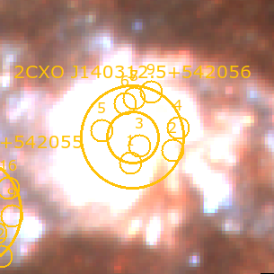
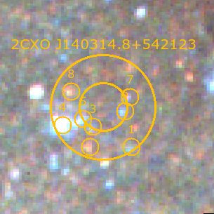

Classifying Optical Counterparts#
Once the 2-\(\sigma\) radii and optical counterpart(s) of each X-ray source are identified, one will often find that not all X-ray sources are associated with stars. The optical counterpart of an X-ray source may be:
the nucleus of the galaxy,
a background galaxy,
a foreground star,
a compact star cluster,
a genuine luminous star,
a supernova remnant (SNR), or
nothing (suggesting the counterpart is a low-mass star that’s too dim to be detected by the HST observations)
Flagging these classifications is a crucial step in building a clean XRB catalog. For the most part, many of these classifications can be done through visual inspection. For example, in Astrometric Corrections we saw several examples of visibly-identifiable source types:
{kind=link}
Some cases (such as SNR) require additional analysis to identify, especially if a catalog does not already exist for your galaxy. This chapter outlines both visual and analytical source classification methods.
Imaging X-ray sources with WriteDS9()#
Rather than spend time panning to each source in DS9 individually, you may find it useful to take jpeg or png postage stamp images of each X-ray source so that you can browse through them quickly. The quickest way to accomplish this is with XRBID.WriteScript.WriteDS9(). This custom function writes an executable bash script that opens a color image and any input region files in DS9, flashes to the coordinates of each input source, and saves a zoomed-in and zoomed-out image at that location. You can then open the image files to visually determine which are background galaxies, foreground stars, compact star clusters, etc.
Before one uses WriteDS9(), there are a few steps you should take to make sure the images of each X-ray source are visible and high-quality. This is a fairly involved process. In general, the best procedure for setting up WriteDS9() is:
Manually create an autoscaling file with a list of [redscale, greenscale, bluescale, xmin, xmax, ymin, ymax];
Run
XRBID.WriteScript.WriteScalings()using the new autoscaling file name as thescalingsargument to create a file with a list of unique location-based scalings for each source;Run
XRBID.WriteScript.WriteDS9()usingunique_scale=Trueand the new unique scaling file as thescalesargument;Run the resulting
.shbash file to get scaled images of each source.
Manually defining the scale parameters at each image location#
Just as each color filter requires a different brightness scaling to adjust the color of the entire galaxy image (see Creating Mosaics with AstroDrizzle), different parts of the galaxy will require different brightness scalings due to higher or lower levels of background light. In particular, as you get closer to the center of the galaxy, you will almost always require higher maximum scale parameters in order to lower the overall image brightness and make individual stars visible above the background.
The best scaling for each region is determined manually through experimenting in DS9. In a simple text editing program, open a blank .txt file to record your scale parameters; I usually name this autoscalings.txt or something to that effect. This file will be used to record the user-defined maximum scale parameter of the red, green, and blue filters (respectively), and the x and y coordinates of the corners of the rectangle within which these scalings apply. These scalings will be read from the outside-in — that is, the first rectangle defined in the autoscalings.txt file represents the outer-most region that requires a unique scaling, the next rectangle represents a region nested within the first rectangle that requires even higher scale parameters to see stars within that region, the next rectangle is nested within that rectangle, and so on. This is visualized in Fig. 15 below.
{kind=link}
Fig. 15 Examples of regions that require higher maximum scale parameters. In my case, I defined 3 regions in a file called autoscalings.txt, given in Fig. 16 below. Anything outside of Region 1 defaults to zscale for all 3 filters. Sources that fall between Region 1 and Region 2 will be given the scale parameters defined in the first row of autoscaling.txt: 0.9 for red, 0.4 for green, and 0.22 for blue. Sources that fall between Region 2 and 3 will be given the scale parameters in the second row; notice the increase in the maximum scale parameters as the background within the region gets brighter. Everything within Region 3 will be given the parameters defined in the last row, which has the highest scale parameters in all three filters.#
{kind=link}
Fig. 16 Examples of user-defined scale parameters and the regions within which they apply. For each row, I define the max scale parameter of the red, green, and blue filters, followed by the minimum x coordinate, maximum x coordinate, minimum y coordinate, and maximum y coordinate (in image/pixel units) of the rectangular region encompassing these parameters (see Fig. 15 above).#
In DS9, open a New RGB Frame and import the appropriate FITS files into the RGB filters.
The appropriate scaling for the outskirts of the galaxy is usually zscale across all three filters; this is the default for any source that falls outside the regions defined in autoscalings.txt.
Closer to the center of the galaxy, there will be some point at which the background brightness becomes so high that the point sources are difficult to see. Mark this region with a rectangle (you can use the edit > region and Region > Shape > Box tool to help keep track, or write down the minimum x coordinate, maximum x coordinate, minimum y coordinate, and maximum y coordinate of the region in autoscalings.txt). Adjust the scale parameter of each RGB filter by selecting the filter, opening the Scale > Scale Parameter window, and adjusting the High value until the background brightness and stars in the region of interest look reasonable. Record the new RGB scale parameters in autoscalings.txt, in the format used in Fig. 16.
Repeat this process for increasingly bright central regions until you have a good set of scale parameters for each region within which the X-ray sources fall. You can create as many nested regions as needed, and you can adjust them later if you find some sources are still difficult to see or exhibit strange colors once you create the postage stamp images with the new scale parameters you provided.
Defining the scale parameters of each X-ray source#
The function XRBID.WriteScript.WriteScalings() takes the scale parameters from the text file created above (which I called autoscalings.txt) and determines which applies to each source in a given DataFrame. The DataFrame should contain the ID and image coordinates (which I define under the headers X and Y) of each source you want to image.
In the example below, I want to create images that include the 1- and 2-\(\sigma\) region files of each X-ray source, so I choose to use the DataFrame saved in M101_csc_bestrads.frame as my base DataFrame. I elect to simplify each source ID, to avoid having to use the full CSC ID from this point on. This is totally optional, and if working with multiple galaxies, it’s advisable to chose source IDs that include the galaxy name (e.g. M101X001, M101X002, etc.) so that you can differentiate the XRBs at a glance.
Once I read in the DataFrame, I run WriteScalings() to create a new scalings file that contains the ID of each source and their RGB scale parameters, which WriteDS9() will use to rescale the full-color image as it images each X-ray source.
from XRBID.Sources import LoadSources
from XRBID.WriteScript import WriteScalings
M101_best = LoadSources("../testdata/M101_csc_bestrads.frame")
# Renaming each X-ray source as CXO001, CXO002, CXO003, etc. under header "ID"
M101_best["ID"] = ["CXO%03d" % (i+1) for i in range(len(M101_best))]
# Outputs a new scalings file
WriteScalings(M101_best, outfile="../testdata/M101_XRB_scalings.txt",
scalings="../testdata/autoscalings.txt", idheader="ID")
{kind=link}
Fig. 17 Example of the output file from WriteScalings(). For each XRB, which have been renumbered for simplicity, the maximum red, green, and blue scale parameters that will produce the best image are given. In my case, since my X-ray sources are sorted by distance from the center of the galaxy, it’s natural that the sources at the top of the file have higher scale parameters (lowering the brightness of the background sky) than those farther down the file.#
Making a bash script with WriteDS9()#
Once a scaling file is created, you can run WriteDS9() to create the bash script that will ultimately create the DS9 postage stamp images.
Note
If you don’t create a scalings file as we have just done, WriteDS9() will assume a scale of zscale for all sources. This will result in several images that are too bright to see, particularly towards the center.
WriteDS9() takes as parameters the DataFrame containing the sources you want to image, a list of the FITS files to be read into the RGB frame (colorfiles), a list of any region files you want to include in the images (regions), and the name of the scaling file created by WriteScalings() (scales, with unique_scales = True). You’ll also want to select one of the filters to use as the base over which the regions are printed (in my case, I use green for F555W), imgnames if you want to define a naming convention for the images, and the name of the output .sh file. You can also define the zoom scale of DS9, which is especially useful for sources with a large 2-\(\sigma\) radius.
from XRBID.WriteScript import WriteDS9
WriteDS9(M101_best, galaxy="M101", zoom=4,
unique_scale=True, scales="../testdata/M101_XRB_scalings.txt",
regions=["../testdata/M101_XRB_candidates.reg",
"../testdata/M101_bestrads_1sig.reg",
"../testdata/M101_bestrads_2sig.reg"],
colorfiles=["../testdata/M101_mosaic_acs_f814w_drc_sci.fits",
"../testdata/M101_mosaic_acs_f555w_drc_sci.fits",
"../testdata/M101_mosaic_acs_f435w_drc_sci.fits"],
basefilter=['green'], imgnames="../testdata/M101_XRB_candidates",
outfile="../testdata/M101_XRB_candidates.sh", idheader="ID", filetype="png")
Running the bash script#
In a terminal, from the directory where the .sh bash script is saved, open a xterm:
xterm &
This should pull up a new window with a different font than your typical terminal. Then, run the bash script:
bash M101_XRB_candidates.sh
This should open a full color image in DS9 and begin flashing through each of the X-ray sources in your DataFrame as it saves the images. By default, it saves to two versions: one image at normal zoom, and a second with a farther zoom that has the suffix _env. It’s best to run the bash script without the & so that you can use Ctrl+C to shut down the bash script if something goes wrong, or if you notice the user-defined scalings need to be tweaked.
Note
If you encounter a display error trying to run the bash script, follow the instructions in Errors and How to Fix Them.
Below are M101_XRB_candidates_CXO001.png and M101_XRB_candidates_CXO012.png, two of the images that result from running the .sh bash script. As we can see, I plotted the 1- and 2-\(\sigma\) regions for each X-ray sources, which are labeled with the original “CSC ID”, and regions indicating which stars were detected by RunPhots() and determined by DaoClean() to fall within 2-\(\sigma\). The stars have been renumbered for simplicity. CXO001 is the nucleus of M101, and rescaling the maximum scale parameters allows us to see the X-ray source instead of the source being outshined by the background brightness of the galaxy’s core! By rescaling, we are able to get images of similar relative brightness, regardless of where they fall in the galaxy. This allows us to see what kind of source it may be at a glance – in this case, CXO001 is the nucleus, while CXO012 appears to be a regular star, likely of high mass.
 
Flagging out-of-bounds X-ray sources#
It’s likely that some of the X-ray sources fall outside the bounds of the HST image or within a chip gap and cannot be used for analysis. The easiest way to flag these is to delete the image files for those sources, read in a list of the remaining image files, and flag those X-ray sources as ‘good’.
In the example below, I’ve manually removed all images of ‘bad’ sources from the image directory before reading in a list of the image files.
# The only images that remain in this folder are 'good' X-ray sources
imgfiles = glob.glob("*_env.png")
imgfiles.sort()
goodxrbs = [i.split("_")[3] for i in imgfiles]
# Sets all X-ray sources as out-of-bounds by default
M101_best["Bounds"] = "Out"
# Then, sets the sources in the list above as within the bounds of the mosaic
for i in range(len(M101_best)):
if M101_best["ID"][i] in goodxrbs:
M101_best["Bounds"][i] = "In"
Classifying sources by eye#
With the images complete, one should be able to visually inspect and flag any source that looks like a background galaxy (extended, red, and usually disk-like or blobby) or a foreground star (with diffraction spikes). I recommend creating a file in which you can keep track of the classification of each X-ray source. There are some tools within XRBID that can help (such as XRBID.Sources.SourceList() or XRBID.DataFrameMod.BuildFrame(), depending on how you prefer to work). For M101, I chose to create a .txt file that I will use to classify contaminants and keep track of the XRB donor star mass categories in Estimating XRB Masses with CMDs and CCDs.
# Creating a DataFrame of good XRBs only
M101_xrbs = Find(M101_best, "Bounds = In")
# Adding empty columns that I'll use later
M101_xrbs["Class"] = ""
M101_xrbs["Best Star"] = ""
M101_xrbs["Mass"] = ""
M101_xrbs["Notes"] = ""
M101_notes = BuildFrame(headers=["CSC ID", "ID", "Class",
"Best Star", "Mass", "Notes"],
values=[M101_xrbs["CSC ID"],
M101_xrbs["ID"],
M101_xrbs["Class"],
M101_xrbs["Best Star"],
M101_xrbs["Mass"],
M101_xrbs["Notes"]])
# Saving to a new .txt file. Can also use .frame
M101_notes.to_csv("../testdata/M101_XRB_notes.txt")
In the “Class” column of the file, I manually write ‘Nucleus’, ‘AGN’, ‘Star’, or ‘Cluster’ for the appropriate source using my preferred text editing software. If a source only has a single optical counterpart or a counterpart is one of these classifications, you can go ahead and update the “Best Star” value to reflect the appropriate candidate ID for that source as well. So, for the example of CXO001, I write ‘Nucleus’ as the “Class” and ‘3’ as the “Best Star”.
Identifying SNR from X-ray properties#
While true SNR identification is a multi-wavelength process that requires a lot of analysis of data we don’t typically have for these XRB surveys, a shortcut using just X-ray colors was developed in [HGC+21] based on the X-ray properties of known SNRs in M83. It defines hardness ratio (HR) and X-ray luminosity (Lx) cuts, such that the majority of X-ray sources below the pre-defined limits are likely SNRs. Ideally, these cuts would be tested against SNR in a sample of additional galaxies, but for now, we define SNR candidates as those having HR ≤ −0.75 and a log(Lx) ≤ 37.5, as shown in Fig. 18.
{kind=link}
Fig. 18 A visual representation of the SNR selection criteria applied to pre-classified X-ray sources in M83. See [HGC+21] for more information.#
The X-ray luminosities of X-ray sources are calculated from the X-ray flux obtained from CSC. Future versions of XRBID will include a new module called XRTools.py, within which will be the following function to help with this process:
def Lum(F, dist):
"""Calculates the luminosity of a set of sources given the flux and distance to the host galaxy.
PARAMETERS
----------
F [list] : Flux of X-ray source(s), in units ergs/s/cm^2.
dist [float] : Distance to the galaxy in units pc or cm.
RETURNS
---------
L [list] : List of luminosities in units ergs/s
"""
if not dist: dist = input("Galaxy distance (in pc, Mpc, or cm)? ")
# if dist is less than 100, probably given in Mpcs. Convert to pcs.
if dist < 100:
dist = dist * 10**6
# need dist in cm, since F is in ergs/s/cm2. If not given in cm, convert.
if dist < 1e18:
dist = dist * 3e18
F = np.array(F)
L = F*4*pi*(dist)**2 # luminosity calculation
L = L.tolist()
return L
There are several ways one can keep track of these sources, depending on your workflow. Based on the current data files I’ve created in these examples, I would probably use Find() on M101_best to identify SNR candidates from the X-ray properties of each source. Then for each source in M101_xrb, I would check to see if the source appears in the SNR DataFrame I just created and update the Class header to (SNR) if it does, where the parentheses indicate that these are candidate SNR rather than SNR definitively identified by some other catalog. Alternatively, I have also, in previous surveys, added a (SNR) column to my main working DataFrame and flagged them as True or False (1 or 0) based on the cuts.